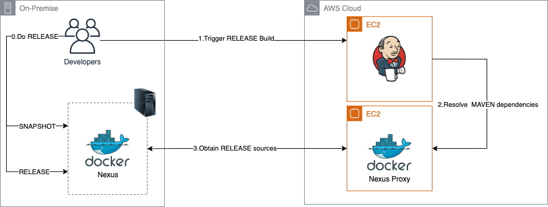
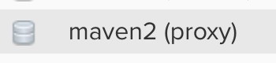
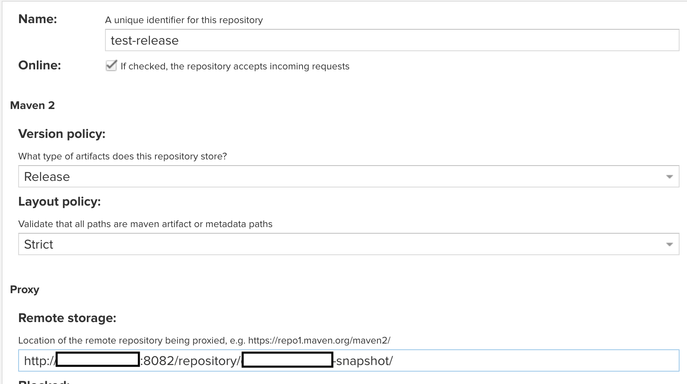
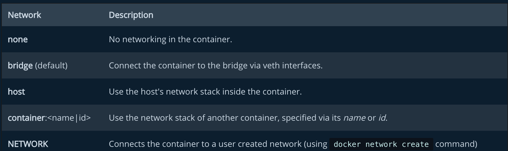
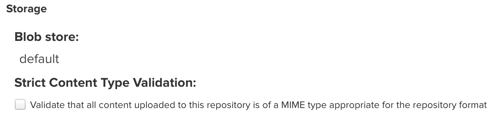
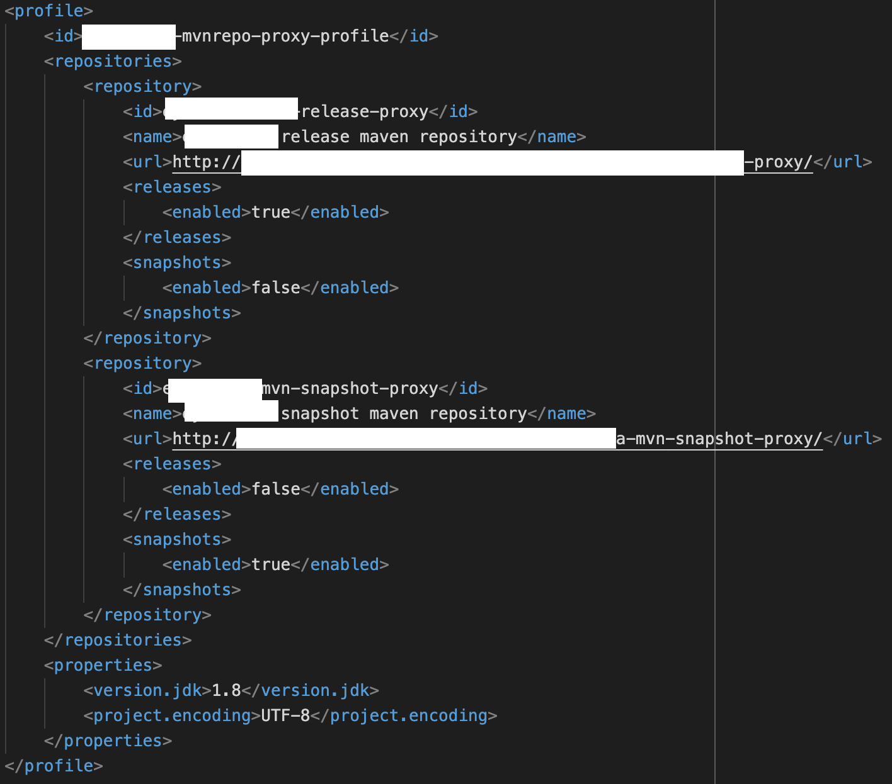
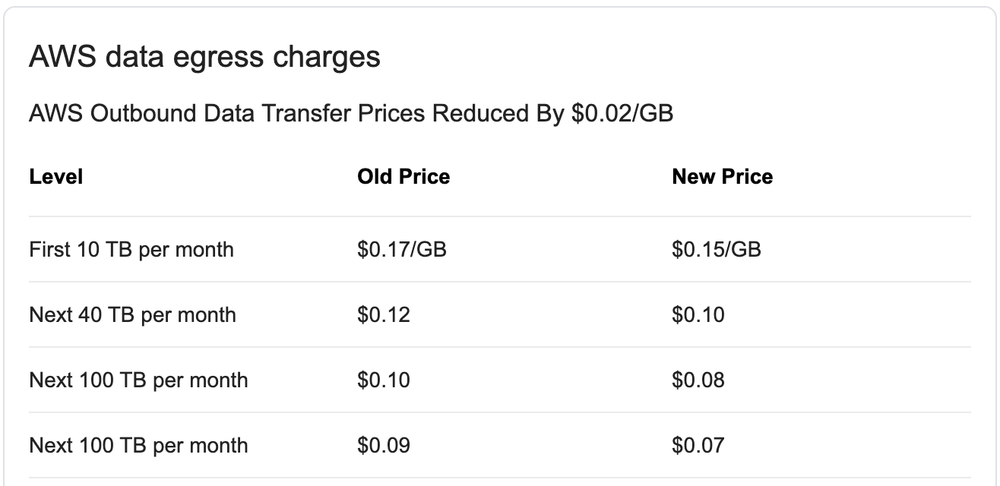

<!DOCTYPE html>
<html lang="zh-hant">

<head>

  <meta charset="utf-8">
  <meta name="viewport" content="width=device-width, initial-scale=1">
  <meta http-equiv="X-UA-Compatible" content="IE=edge">
  <meta name="generator" content="Source Themes Academic 4.8.0">

  

  
  
  
  
  
    
    
    
  
  

  <meta name="author" content="Zane Chen">

  
  
  
    
  
  <meta name="description" content="如何建立容器化 Nexus 服務 Repository Proxy">

  
  <link rel="alternate" hreflang="zh-hant" href="https://u2633.github.io/post/2020/10/how-to-setup-nexus-proxy-with-remote-nexus/">

  


  
  
  
  <meta name="theme-color" content="rgb(0, 136, 204)">
  

  
  
  
  <script src="/js/mathjax-config.js"></script>
  

  
  
  
  
    
    <link rel="stylesheet" href="https://cdnjs.cloudflare.com/ajax/libs/academicons/1.8.6/css/academicons.min.css" integrity="sha256-uFVgMKfistnJAfoCUQigIl+JfUaP47GrRKjf6CTPVmw=" crossorigin="anonymous">
    <link rel="stylesheet" href="https://cdnjs.cloudflare.com/ajax/libs/font-awesome/5.12.0-1/css/all.min.css" integrity="sha256-4w9DunooKSr3MFXHXWyFER38WmPdm361bQS/2KUWZbU=" crossorigin="anonymous">
    <link rel="stylesheet" href="https://cdnjs.cloudflare.com/ajax/libs/fancybox/3.5.7/jquery.fancybox.min.css" integrity="sha256-Vzbj7sDDS/woiFS3uNKo8eIuni59rjyNGtXfstRzStA=" crossorigin="anonymous">

    
    
    
      
    
    
      
      
        
          <link rel="stylesheet" href="https://cdnjs.cloudflare.com/ajax/libs/highlight.js/9.18.1/styles/github.min.css" crossorigin="anonymous" title="hl-light" disabled>
          <link rel="stylesheet" href="https://cdnjs.cloudflare.com/ajax/libs/highlight.js/9.18.1/styles/dracula.min.css" crossorigin="anonymous" title="hl-dark">
        
      
    

    
    <link rel="stylesheet" href="https://cdnjs.cloudflare.com/ajax/libs/leaflet/1.5.1/leaflet.css" integrity="sha256-SHMGCYmST46SoyGgo4YR/9AlK1vf3ff84Aq9yK4hdqM=" crossorigin="anonymous">
    

    

    
    
      

      
      

      
    
      

      
      

      
    
      

      
      

      
    
      

      
      

      
    
      

      
      

      
    
      

      
      

      
    
      

      
      

      
    
      

      
      

      
    
      

      
      

      
    
      

      
      

      
    
      

      
      

      
        <script src="https://cdnjs.cloudflare.com/ajax/libs/lazysizes/5.1.2/lazysizes.min.js" integrity="sha256-Md1qLToewPeKjfAHU1zyPwOutccPAm5tahnaw7Osw0A=" crossorigin="anonymous" async></script>
      
    
      

      
      

      
    
      

      
      

      
    
      

      
      

      
        <script src="https://cdn.jsdelivr.net/npm/mathjax@3/es5/tex-chtml.js" integrity="" crossorigin="anonymous" async></script>
      
    
      

      
      

      
    

  

  
  
  
  <link rel="stylesheet" href="https://fonts.googleapis.com/css?family=B612+Mono:400,700%7COrbitron:400,700&display=swap">
  

  
  
  
  
  <link rel="stylesheet" href="/css/academic.css">

  


  


  

  <link rel="manifest" href="/index.webmanifest">
  <link rel="icon" type="image/png" href="/images/icon_hu4b75b0750a7644dfba4c3cde2b8c5154_77905_32x32_fill_lanczos_center_2.png">
  <link rel="apple-touch-icon" type="image/png" href="/images/icon_hu4b75b0750a7644dfba4c3cde2b8c5154_77905_192x192_fill_lanczos_center_2.png">

  <link rel="canonical" href="https://u2633.github.io/post/2020/10/how-to-setup-nexus-proxy-with-remote-nexus/">

  
  
  
  
  
    
    
  
  
  <meta property="twitter:card" content="summary">
  
  <meta property="og:site_name" content="Z@NE.NOTE">
  <meta property="og:url" content="https://u2633.github.io/post/2020/10/how-to-setup-nexus-proxy-with-remote-nexus/">
  <meta property="og:title" content="Repository Proxy of Containerized Nexus Setup | Z@NE.NOTE">
  <meta property="og:description" content="如何建立容器化 Nexus 服務 Repository Proxy"><meta property="og:image" content="https://u2633.github.io/images/icon_hu4b75b0750a7644dfba4c3cde2b8c5154_77905_512x512_fill_lanczos_center_2.png">
  <meta property="twitter:image" content="https://u2633.github.io/images/icon_hu4b75b0750a7644dfba4c3cde2b8c5154_77905_512x512_fill_lanczos_center_2.png"><meta property="og:locale" content="zh-hant">
  
    
      <meta property="article:published_time" content="2020-10-26T11:20:08&#43;08:00">
    
    <meta property="article:modified_time" content="2020-10-26T11:20:08&#43;08:00">
  

  


    


  


<script type="application/ld+json">
{
  "@context": "https://schema.org",
  "@type": "BlogPosting",
  "mainEntityOfPage": {
    "@type": "WebPage",
    "@id": "https://u2633.github.io/post/2020/10/how-to-setup-nexus-proxy-with-remote-nexus/"
  },
  "headline": "Repository Proxy of Containerized Nexus Setup",
  
  "datePublished": "2020-10-26T11:20:08+08:00",
  "dateModified": "2020-10-26T11:20:08+08:00",
  
  "author": {
    "@type": "Person",
    "name": "Zane"
  },
  
  "publisher": {
    "@type": "Organization",
    "name": "Z@NE.NOTE",
    "logo": {
      "@type": "ImageObject",
      "url": "https://u2633.github.io/images/icon_hu4b75b0750a7644dfba4c3cde2b8c5154_77905_192x192_fill_lanczos_center_2.png"
    }
  },
  "description": "如何建立容器化 Nexus 服務 Repository Proxy"
}
</script>

  

  


  


  


  <title>Repository Proxy of Containerized Nexus Setup | Z@NE.NOTE</title>

</head>

<body id="top" data-spy="scroll" data-offset="70" data-target="#TableOfContents" class="dark">

  <aside class="search-results" id="search">
  <div class="container">
    <section class="search-header">

      <div class="row no-gutters justify-content-between mb-3">
        <div class="col-6">
          <h1>搜尋</h1>
        </div>
        <div class="col-6 col-search-close">
          <a class="js-search" href="#"><i class="fas fa-times-circle text-muted" aria-hidden="true"></i></a>
        </div>
      </div>

      <div id="search-box">
        
        <input name="q" id="search-query" placeholder="搜尋..." autocapitalize="off"
        autocomplete="off" autocorrect="off" spellcheck="false" type="search">
        
      </div>

    </section>
    <section class="section-search-results">

      <div id="search-hits">
        
      </div>

    </section>
  </div>
</aside>


  


<nav class="navbar navbar-expand-lg navbar-light compensate-for-scrollbar" id="navbar-main">
  <div class="container">

    
    <div class="d-none d-lg-inline-flex">
      <a class="navbar-brand" href="/">Z@NE.NOTE</a>
    </div>
    

    
    <button type="button" class="navbar-toggler" data-toggle="collapse"
            data-target="#navbar-content" aria-controls="navbar" aria-expanded="false" aria-label="切換導航">
    <span><i class="fas fa-bars"></i></span>
    </button>
    

    
    <div class="navbar-brand-mobile-wrapper d-inline-flex d-lg-none">
      <a class="navbar-brand" href="/">Z@NE.NOTE</a>
    </div>
    

    
    
    <div class="navbar-collapse main-menu-item collapse justify-content-start" id="navbar-content">

      
      <ul class="navbar-nav d-md-inline-flex">
        

        

        
        
        
          
        

        
        
        
        
        
        
          
          
          
            
          
          
        

        <li class="nav-item">
          <a class="nav-link " href="/#about"><span>關於</span></a>
        </li>

        
        

        

        
        
        
          
        

        
        
        
        
        
        
          
          
          
            
          
          
        

        <li class="nav-item">
          <a class="nav-link " href="/#posts"><span>文章</span></a>
        </li>

        
        

        

        
        
        
          
        

        
        
        
        
        
        
          
          
          
            
          
          
        

        <li class="nav-item">
          <a class="nav-link " href="/#projects"><span>專案</span></a>
        </li>

        
        

        

        
        
        
          
        

        
        
        
        
        
        
          
          
          
            
          
          
        

        <li class="nav-item">
          <a class="nav-link " href="/#contact"><span>聯絡我</span></a>
        </li>

        
        

      

        
      </ul>
    </div>

    <ul class="nav-icons navbar-nav flex-row ml-auto d-flex pl-md-2">
      
      <li class="nav-item">
        <a class="nav-link js-search" href="#"><i class="fas fa-search" aria-hidden="true"></i></a>
      </li>
      

      
      <li class="nav-item">
        <a class="nav-link js-dark-toggle" href="#"><i class="fas fa-moon" aria-hidden="true"></i></a>
      </li>
      

      

    </ul>

  </div>
</nav>


  <article class="article">

  


  

  
  
  
<div class="article-container pt-3">
  <h1>Repository Proxy of Containerized Nexus Setup</h1>

  

  
    


<div class="article-metadata">

  
  
  
  
  <div>
    

  
  <span><a href="/authors/zane/">Zane</a></span>
  </div>
  
  

  
  <span class="article-date">
    
    
      
    
    2020年10月26日
  </span>
  

  

  
  <span class="middot-divider"></span>
  <span class="article-reading-time">
    1 閱讀時間（分鐘）
  </span>
  

  
  
  

  
  
  <span class="middot-divider"></span>
  <span class="article-categories">
    <i class="fas fa-folder mr-1"></i><a href="/categories/devops/">DevOps</a></span>
  

</div>

    


  
</div>


  <div class="article-container">

    <div class="article-style">
      <h2 id="前言">前言</h2>
<p>在開發 JAVA 的使用者應該都有聽過或使用過 
<a href="https://www.sonatype.com/nexus/repository-oss" target="_blank" rel="noopener">Nexus</a> 這套 Artifact Repository 的經驗過。Nexus 不但能夠當 Host，還能作為 Proxy 來存取遠端的 Repository。</p>
<p>由於為了省錢的原故，筆者想了一套AWS的省錢方式，如下圖</p>
<p></p>
<p>接下來，就開始進入實作吧!</p>
<h2 id="建立-proxy-repository">建立 Proxy Repository</h2>
<p>進入 Nexus 後選擇創建新的 Repository 並且選擇<code>Proxy</code>作為建立類別</p>
<p></p>
<p>進入設定頁面後填入名稱及遠端儲存的位置後，其他保留預設即可</p>
<p></p>
<p>這時候就可以使用<code>curl</code>來試試看是能否成功下載。如果能正常的 Hit 到遠端的檔案就成功了。</p>
<p><em>Note:</em> 我在測試下載的步驟裡一開始是失敗的，但最後找到的原因是由於我的 Proxy 跟 Remote 都是使用容器化服務，
而且，前後共遇到了兩個問題，這些問題的解法紀錄在下一章的<code>Troubleshoot</code>裡。</p>
<h2 id="troubleshoot">Troubleshoot</h2>
<h3 id="解決-502-bad-gateway">解決 502 Bad Gateway</h3>
<p>在走完上面的設定步驟後，如果正在看這篇文章的你跟我一樣是使用 Docker 來建 Nexus 的服務，應該也會遇到 502 錯誤。
因為 Docker 預設的網路配置是<code>bridge</code>，解法是在建立 Container 的時候加上<code>--net=host</code>來解決，這是告訴 Docker 容器要使用的是 Host 的網路堆疊，而不是用橋接的方式。</p>
<p></p>
<h3 id="解決-content-type-錯誤">解決 Content Type 錯誤</h3>
<p>在解決完 502 錯誤後，我又遇到了<code>Detected content type [application/x-sh], but expected [application/java-archive]:xxxxx.jar</code>的錯誤，解決方式是進入 Proxy Repository 裡<code>取消</code> Content-Type 的限制即可</p>
<p></p>
<h2 id="整合-nexus-proxy-至-pomxml20201110更新">整合 Nexus Proxy 至 pom.xml(2020/11/10更新)</h2>
<p>完成 Proxy Repository 後，接下來就是要將它整合進我們的專案裡了。打開pom.xml後並且建立新的<code>ActiveProfile</code></p>
<p></p>
<p>收工!!!</p>
<h2 id="後記">後記</h2>
<p>在後來得知內部每個月會從 AWS 拉資料的大小其實不到10G後，就決定直接把 Nexus 整個上雲了。
理由則是，實作的過程時間成本過高。當初覺得能省則省才考慮用此架構，但是發現僅需要花費不到100塊的台幣就能解決的事，我們確花了超過100元台幣的時間成本來解決，實在是不划算阿。</p>
<p></p>
<p>這個經驗也讓我學習到，在設計架構上，<code>時間成本</code>絕對要例入考慮呀!</p>
<h2 id="參考資料">參考資料</h2>
<p><a href="https://blog.csdn.net/fenfei1992/article/details/106257407">https://blog.csdn.net/fenfei1992/article/details/106257407</a>
<a href="https://github.com/spring-projects/spring-boot/issues/9437">https://github.com/spring-projects/spring-boot/issues/9437</a>
<a href="https://stackoverflow.com/questions/38346847/nginx-docker-container-502-bad-gateway-response">https://stackoverflow.com/questions/38346847/nginx-docker-container-502-bad-gateway-response</a></p>

    </div>

    


<div class="article-tags">
  
  <a class="badge badge-light" href="/tags/nexus/">Nexus</a>
  
  <a class="badge badge-light" href="/tags/docker/">Docker</a>
  
</div>


<div class="share-box" aria-hidden="true">
  <ul class="share">
    
      
      
      
        
      
      
      
      <li>
        <a href="https://twitter.com/intent/tweet?url=https://u2633.github.io/post/2020/10/how-to-setup-nexus-proxy-with-remote-nexus/&amp;text=Repository%20Proxy%20of%20Containerized%20Nexus%20Setup" target="_blank" rel="noopener" class="share-btn-twitter">
          <i class="fab fa-twitter"></i>
        </a>
      </li>
    
      
      
      
        
      
      
      
      <li>
        <a href="https://www.facebook.com/sharer.php?u=https://u2633.github.io/post/2020/10/how-to-setup-nexus-proxy-with-remote-nexus/&amp;t=Repository%20Proxy%20of%20Containerized%20Nexus%20Setup" target="_blank" rel="noopener" class="share-btn-facebook">
          <i class="fab fa-facebook"></i>
        </a>
      </li>
    
      
      
      
        
      
      
      
      <li>
        <a href="mailto:?subject=Repository%20Proxy%20of%20Containerized%20Nexus%20Setup&amp;body=https://u2633.github.io/post/2020/10/how-to-setup-nexus-proxy-with-remote-nexus/" target="_blank" rel="noopener" class="share-btn-email">
          <i class="fas fa-envelope"></i>
        </a>
      </li>
    
      
      
      
        
      
      
      
      <li>
        <a href="https://www.linkedin.com/shareArticle?url=https://u2633.github.io/post/2020/10/how-to-setup-nexus-proxy-with-remote-nexus/&amp;title=Repository%20Proxy%20of%20Containerized%20Nexus%20Setup" target="_blank" rel="noopener" class="share-btn-linkedin">
          <i class="fab fa-linkedin-in"></i>
        </a>
      </li>
    
  </ul>
</div>


  
    
    


  
  
  
  
  
  <div class="media author-card content-widget-hr">
    

    <div class="media-body">
      <h5 class="card-title"><a href="/authors/zane/"></a></h5>
      
      
      <ul class="network-icon" aria-hidden="true">
  
</ul>

    </div>
  </div>


  


  
  
  <div class="article-widget content-widget-hr">
    <h3>相關</h3>
    <ul>
      
      <li><a href="/post/2020/09/the-right-way-to-run-npm-command-in-container-on-jenkins/">The Right Way to Run Npm Commands in Container on Jenkins</a></li>
      
      <li><a href="/post/2020/09/how-to-run-jenkins-service-on-docker/">How to Run Jenkins Service on Docker</a></li>
      
    </ul>
  </div>
  


  </div>
</article>

      

    
    
    
      <script src="https://cdnjs.cloudflare.com/ajax/libs/jquery/3.4.1/jquery.min.js" integrity="sha256-CSXorXvZcTkaix6Yvo6HppcZGetbYMGWSFlBw8HfCJo=" crossorigin="anonymous"></script>
      <script src="https://cdnjs.cloudflare.com/ajax/libs/jquery.imagesloaded/4.1.4/imagesloaded.pkgd.min.js" integrity="sha256-lqvxZrPLtfffUl2G/e7szqSvPBILGbwmsGE1MKlOi0Q=" crossorigin="anonymous"></script>
      <script src="https://cdnjs.cloudflare.com/ajax/libs/jquery.isotope/3.0.6/isotope.pkgd.min.js" integrity="sha256-CBrpuqrMhXwcLLUd5tvQ4euBHCdh7wGlDfNz8vbu/iI=" crossorigin="anonymous"></script>
      <script src="https://cdnjs.cloudflare.com/ajax/libs/fancybox/3.5.7/jquery.fancybox.min.js" integrity="sha256-yt2kYMy0w8AbtF89WXb2P1rfjcP/HTHLT7097U8Y5b8=" crossorigin="anonymous"></script>

      
        <script src="https://cdnjs.cloudflare.com/ajax/libs/mermaid/8.4.8/mermaid.min.js" integrity="sha256-lyWCDMnMeZiXRi7Zl54sZGKYmgQs4izcT7+tKc+KUBk=" crossorigin="anonymous" title="mermaid"></script>
      

      
        
        <script src="https://cdnjs.cloudflare.com/ajax/libs/highlight.js/9.18.1/highlight.min.js" integrity="sha256-eOgo0OtLL4cdq7RdwRUiGKLX9XsIJ7nGhWEKbohmVAQ=" crossorigin="anonymous"></script>
        
        <script src="https://cdnjs.cloudflare.com/ajax/libs/highlight.js/9.18.1/languages/r.min.js"></script>
        
      

    

    
    
      <script src="https://cdnjs.cloudflare.com/ajax/libs/leaflet/1.5.1/leaflet.js" integrity="sha256-EErZamuLefUnbMBQbsEqu1USa+btR2oIlCpBJbyD4/g=" crossorigin="anonymous"></script>
    

    
    
    <script>const code_highlighting = true;</script>
    

    
    
    <script>const isSiteThemeDark = true;</script>
    

    
    
    
    
    
    
    <script>
      const search_config = {"indexURI":"/index.json","minLength":1,"threshold":0.3};
      const i18n = {"no_results":"找不到结果","placeholder":"搜尋...","results":"搜尋结果"};
      const content_type = {
        'post': "文章",
        'project': "專案",
        'publication' : "出版物",
        'talk' : "演講"
        };
    </script>
    

    
    

    
    
    <script id="search-hit-fuse-template" type="text/x-template">
      <div class="search-hit" id="summary-{{key}}">
      <div class="search-hit-content">
        <div class="search-hit-name">
          <a href="{{relpermalink}}">{{title}}</a>
          <div class="article-metadata search-hit-type">{{type}}</div>
          <p class="search-hit-description">{{snippet}}</p>
        </div>
      </div>
      </div>
    </script>
    

    
    
    <script src="https://cdnjs.cloudflare.com/ajax/libs/fuse.js/3.2.1/fuse.min.js" integrity="sha256-VzgmKYmhsGNNN4Ph1kMW+BjoYJM2jV5i4IlFoeZA9XI=" crossorigin="anonymous"></script>
    <script src="https://cdnjs.cloudflare.com/ajax/libs/mark.js/8.11.1/jquery.mark.min.js" integrity="sha256-4HLtjeVgH0eIB3aZ9mLYF6E8oU5chNdjU6p6rrXpl9U=" crossorigin="anonymous"></script>
    

    
    

    
    

    
    
    
    
    
    
    
    
    
      
    
    
    
    
    <script src="/js/academic.min.6f1005d1a84220e2f466ff3d8e712f31.js"></script>

    


  
  
  <div class="container">
    <footer class="site-footer">
  

  <p class="powered-by">
    

    Powered by the
    <a href="https://sourcethemes.com/academic/" target="_blank" rel="noopener">Academic theme</a> for
    <a href="https://gohugo.io" target="_blank" rel="noopener">Hugo</a>.

    
    <span class="float-right" aria-hidden="true">
      <a href="#" class="back-to-top">
        <span class="button_icon">
          <i class="fas fa-chevron-up fa-2x"></i>
        </span>
      </a>
    </span>
    
  </p>
</footer>

  </div>
  

  
<div id="modal" class="modal fade" role="dialog">
  <div class="modal-dialog">
    <div class="modal-content">
      <div class="modal-header">
        <h5 class="modal-title">引用</h5>
        <button type="button" class="close" data-dismiss="modal" aria-label="Close">
          <span aria-hidden="true">&times;</span>
        </button>
      </div>
      <div class="modal-body">
        <pre><code class="tex hljs"></code></pre>
      </div>
      <div class="modal-footer">
        <a class="btn btn-outline-primary my-1 js-copy-cite" href="#" target="_blank">
          <i class="fas fa-copy"></i> 複製
        </a>
        <a class="btn btn-outline-primary my-1 js-download-cite" href="#" target="_blank">
          <i class="fas fa-download"></i> 下載
        </a>
        <div id="modal-error"></div>
      </div>
    </div>
  </div>
</div>

</body>
</html>
